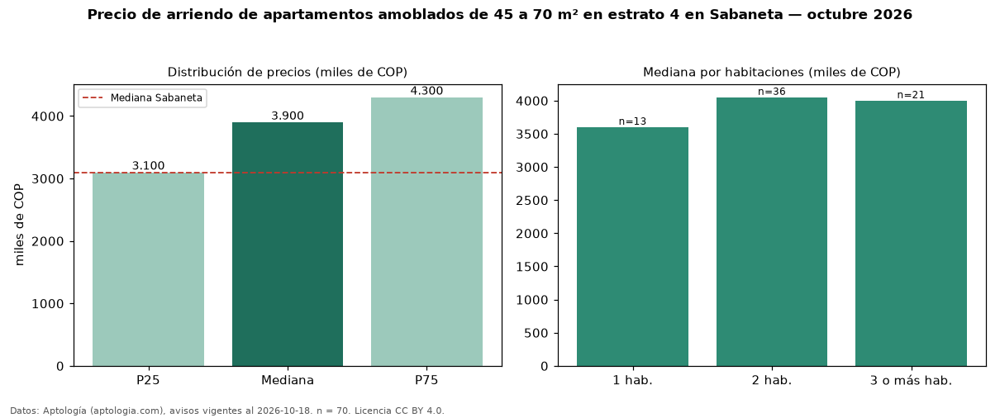

Precio de arriendo de apartamentos amoblados de 45 a 70 m² en estrato 4 en Sabaneta — octubre 2026
En Sabaneta, la mediana de canon mensual de apartamentos amoblados de 45 a 70 m² en estrato 4 es COP 3,90 millones, según 70 avisos vigentes. Frente a la mediana de los apartamentos amoblados en estrato 4 en arriendo de Sabaneta (COP 4,20 millones, n = 186), queda 7 % por debajo; este segmento reúne el 38 % de esos avisos. Por metro cuadrado, la mediana es COP 64.286/m² al mes (n = 66), 5 % por encima de los apartamentos amoblados en estrato 4 en arriendo de Sabaneta (COP 61.180/m²). El área mediana anunciada es 60 m². El segmento con más oferta es el de 2 habitaciones (36 avisos, mediana COP 4,05 millones); pasar de 1 habitación a 3 o más habitaciones cambia la mediana +11 %. La mediana de todos los apartamentos en arriendo de Sabaneta es COP 3,10 millones (+26 % de diferencia). 69 % de los avisos con el dato declara parqueadero. La mitad central de los avisos va de COP 3,10 millones a COP 4,30 millones (razón 1,4), una dispersión baja. Datos: Aptología (aptologia.com), CC BY 4.0 — https://www.aptologia.com/arriendo/sabaneta. Archivos: PDF, CSV con las cifras y gráfica PNG.

| Avisos únicos | 70 |
|---|---|
| Percentil 25 | COP 3.100.000 |
| Mediana | COP 3.900.000 |
| Percentil 75 | COP 4.300.000 |
| Mediana por m² | COP 64.285 |
Fuente: avisos vigentes de portales inmobiliarios recopilados por Aptología, deduplicados (mínimo 30 avisos únicos por celda). Precios pedidos, no cerrados. Fecha: 2026-10-18.